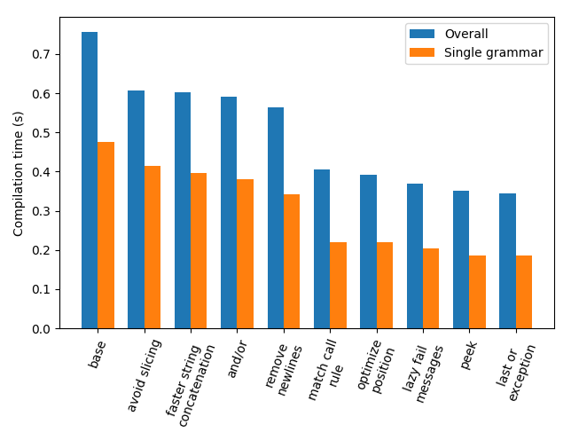

Published on 28 June 2019.
In this article we optimize RLMeta to run faster. The first version did not take performance into account, so it is not surprising that we will get it to run roughly twice as fast.
Before optimizing something for speed it is important to measure how long it takes. We are interested in optimizing the time it takes for RLMeta to compile itself. If it compiles itself faster, it will most likely also compile other RLMeta programs faster.
RLMeta compiles itself in the following steps:
The compile.sh script performs those steps like follows:
1. compile.sh#!/bin/bash
set -e
rlmeta_compiler="$(pwd)/$1"
cd "$(dirname "$0")"
to_python_string() {
python -c 'import sys; sys.stdout.write(repr(sys.stdin.read()))'
}
support_py_string=$(to_python_string < support.py)
support_py=$(python "$rlmeta_compiler" --support)
parser_py=$(python "$rlmeta_compiler" < parser.rlmeta)
codegenerator_py=$(python "$rlmeta_compiler" < codegenerator.rlmeta)
cat <<EOF
<<python template>>
EOFThe Python file template rendered at the end of the script looks like this:
1. compile.sh
2. [python template]{.cp}import sys
SUPPORT = $support_py_string
$support_py
$parser_py
$codegenerator_py
join = "".join
def compile_grammar(grammar):
parser = Parser()
code_generator = CodeGenerator()
return code_generator.run("ast", parser.run("grammar", grammar))
if __name__ == "__main__":
if "--support" in sys.argv:
sys.stdout.write(SUPPORT)
else:
try:
sys.stdout.write(compile_grammar(sys.stdin.read()))
except _MatchError as e:
sys.stderr.write(e.describe())
sys.exit(1)To measure how long it takes for RLMeta to compile itself, we use the time command:
$ time ./compile.sh rlmeta.py > /dev/null
real 0m0.756s
user 0m0.701s
sys 0m0.054sIt takes 0.756s. The goal of our optimizations is to decrease this time.
To get a better understanding of what takes time, we measure how long it takes to compile the parser and the code generator individually:
$ time python rlmeta.py < parser.rlmeta > /dev/null
real 0m0.380s
user 0m0.363s
sys 0m0.015s$ time python rlmeta.py < codegenerator.rlmeta > /dev/null
real 0m0.351s
user 0m0.331s
sys 0m0.019sBoth grammars take roughly the same time to compile (0.380s and 0.351s). Moreover, the compilation of the grammars take up most of the time. The rest (generating the support libraries and rendering the Python file template) takes only 0.025s (0.756-0.380-0.351). We will therefore focus on making compilation of grammars faster.
To get a better understanding of what takes time when compiling grammars, we compile the parser and the code generator with the Python profiler turned on:
$ python -m cProfile -s tottime rlmeta.py < parser.rlmeta
...
513780 function calls (430760 primitive calls) in 0.476 seconds
Ordered by: internal time
ncalls tottime percall cumtime percall filename:lineno(function)
8182/2 0.053 0.000 0.427 0.213 rlmeta.py:7(_or)
22758 0.040 0.000 0.106 0.000 rlmeta.py:234(next)
17411 0.027 0.000 0.046 0.000 rlmeta.py:203(fail)
26658/2 0.023 0.000 0.427 0.213 rlmeta.py:16(_and)
10730/2 0.020 0.000 0.427 0.213 rlmeta.py:43(_match_rule)
2177 0.019 0.000 0.019 0.000 rlmeta.py:147(write)
1 0.013 0.013 0.013 0.013 {method 'write' of 'file' objects}
...$ python -m cProfile -s tottime rlmeta.py < codegenerator.rlmeta
...
450885 function calls (377441 primitive calls) in 0.433 seconds
Ordered by: internal time
ncalls tottime percall cumtime percall filename:lineno(function)
8152/2 0.052 0.000 0.396 0.198 rlmeta.py:7(_or)
19754 0.046 0.000 0.097 0.000 rlmeta.py:234(next)
15838 0.026 0.000 0.049 0.000 rlmeta.py:203(fail)
23478/2 0.020 0.000 0.396 0.198 rlmeta.py:16(_and)
9883/2 0.018 0.000 0.396 0.198 rlmeta.py:43(_match_rule)
15838 0.016 0.000 0.016 0.000 rlmeta.py:211(__init__)
1 0.012 0.012 0.012 0.012 {method 'write' of 'file' objects}
...This again shows that both grammars take roughly the same time to compile (0.476s and 0.433s). (These numbers are higher than the time measurements. Probably because profiling is turned on.) It also shows what functions take most time. Both grammars have roughly the same functions at the top of the list: _or, next, fail, _and, _match_rule, and write.
Because the profiling output looks similar for the two grammars, we will only profile compilation of the parser.
Let's start by examining the _or function, because most time is spent there, and see if we can make it any faster.
The _or function is called any time there is a choice in a grammar and it looks like this:
def _or(self, matchers):
original_stream = self._stream
for matcher in matchers:
try:
return matcher()
except _MatchError:
self._stream = original_stream
original_stream.fail("no choice matched")There is no obvious way to optimize it so instead we try to reduce the number of calls to it. The code generator always generates calls to _or even if there is only one choice: self._or([matcher]). In this case the call to _or is unnecessary because the single matcher can be called directly: matcher(). The same reasoning goes for _and.
To make the code generator skip unnecessary calls to _or and _and, we add the following cases to it:
| ["Or" ast:x] -> x
| ["And" ast:x] -> xIf it sees an Or or an And ast node with only one child, it will skip the calls to _or and _and and just generate the child matcher.
We create a new version of RLMeta as described in Modifying the RLMeta metacompiler and then we measure.
Unfortunately, this does not seem to have any effect on the speed. Why is that? Perhaps because the two added cases to the code generator also makes it slower.
We discard this change for now and move on to the next function which is second on the list.
The next function is used to get the next object from an input stream and it looks like this:
def next(self):
if self.is_at_end():
self.fail("not eof")
next_object = self._objects[0]
return (
next_object,
self._advance(next_object, self._objects[1:]),
)Every time it is called, which is once per object in the input stream, the input stream is sliced: self._objects[1:]. This creates a new list with all objects except the first. For example, if the input stream is the string "print(1)", it will create the substrings "rint(1)", "int(1)", "nt(1)", and so on. This is wasteful.
To avoid slicing the input stream we rewrite it to instead maintain an index where it's at. The next object is retrieved by indexing, and the rest of the objects no longer has to be computed. The index is just incremented instead. With this change, the next function looks like this:
def next(self):
if self.is_at_end():
self.fail("not eof")
return (self._objects[self._index], self._advance())The complete diff can be viewed online.
We create a new version of RLMeta and then we measure:
$ time ./compile.sh rlmeta.py > /dev/null
real 0m0.608s
user 0m0.585s
sys 0m0.022s$ python -m cProfile -s tottime rlmeta.py < parser.rlmeta
...
513780 function calls (430760 primitive calls) in 0.415 seconds
Ordered by: internal time
ncalls tottime percall cumtime percall filename:lineno(function)
8182/2 0.042 0.000 0.366 0.183 rlmeta.py:7(_or)
17411 0.026 0.000 0.044 0.000 rlmeta.py:203(fail)
26658/2 0.021 0.000 0.366 0.183 rlmeta.py:16(_and)
10730/2 0.019 0.000 0.366 0.183 rlmeta.py:43(_match_rule)
2177 0.019 0.000 0.019 0.000 rlmeta.py:147(write)
22758 0.017 0.000 0.077 0.000 rlmeta.py:235(next)
1 0.014 0.014 0.014 0.014 {method 'write' of 'file' objects}
...The overall compilation time went from 0.756s to 0.608s. The compilation time for a single grammar went from 0.476s to 0.415s. The next function moved down the list from 0.040s to 0.017s.
Finally some progress.
We still don't have an obvious way to optimize _or and _and. Next on the list is the fail function which looks like this:
def fail(self, stream, message):
if stream.position() >= self._latest_stream.position():
self._latest_stream = stream
self._latest_message = message
raise _MatchError(self)There is no obvious way to make this faster either. The same goes for the _match_rule function which looks like this:
def _match_rule(self, rule_name):
key = (rule_name, self._stream.position())
if key in self._memo:
result, _, self._stream = self._memo[key]
else:
start = self._stream
result = getattr(self, "_rule_{}".format(rule_name))()
end = self._stream
self._memo[key] = (result, start, end)
return resultWe move down the list and examine the write function.
The write function in the _Output class looks like this:
class _Output(object):
def __init__(self):
self.value = ""
self.indentation = 0
def write(self, value):
for ch in value:
if self.value and ch != "\n" and self.value[-1] == "\n":
self.value += " "*self.indentation
self.value += chIt is used by the code generator to generate string output. It builds up the value by concatenating strings to the current value: self.value += ... This concatenation is done once per generated character. Concatenating strings in Python this way is not the fastest way to do it.
A better way is to use the StringIO class. Its write function is used to build up the value, and its getvalue function is used to return it:
class _Output(object):
def __init__(self):
self.buffer = StringIO()
self.indentation = 0
self.on_newline = True
@property
def value(self):
return self.buffer.getvalue()
def write(self, value):
for ch in value:
is_linebreak = ch == "\n"
if self.indentation and self.on_newline and not is_linebreak:
self.buffer.write(" "*self.indentation)
self.buffer.write(ch)
self.on_newline = is_linebreakThe complete diff can be viewed online.
We create a new version of RLMeta and then we measure:
$ time ./compile.sh rlmeta.py > /dev/null
real 0m0.603s
user 0m0.564s
sys 0m0.038s$ python -m cProfile -s tottime rlmeta.py < parser.rlmeta
...
527910 function calls (444890 primitive calls) in 0.397 seconds
Ordered by: internal time
ncalls tottime percall cumtime percall filename:lineno(function)
8182/2 0.042 0.000 0.370 0.185 rlmeta.py:12(_or)
17411 0.026 0.000 0.045 0.000 rlmeta.py:215(fail)
26658/2 0.021 0.000 0.370 0.185 rlmeta.py:21(_and)
10730/2 0.019 0.000 0.370 0.185 rlmeta.py:48(_match_rule)
22758 0.017 0.000 0.078 0.000 rlmeta.py:247(next)
17408 0.012 0.000 0.018 0.000 rlmeta.py:279(__init__)
...
2177 0.006 0.000 0.009 0.000 rlmeta.py:157(write)
...The overall compilation time went from 0.608s to 0.603s. The compilation time for a single grammar went from 0.415s to 0.397s. This is not significant. But much less time is spent in the write function (0.006s compared to 0.019s) so we keep this change. It might be that some more time is spent doing the getvalue call. But it does not show up at the top of the list.
The _or and _and functions are still high up on the list. Now that we have made other parts of RLMeta faster, will the and/or optimization be more useful?
We apply the and/or optimization again, create a new version of RLMeta and then we measure:
$ time ./compile.sh rlmeta.py > /dev/null
real 0m0.592s
user 0m0.560s
sys 0m0.031s$ python -m cProfile -s tottime rlmeta.py < parser.rlmeta
...
508708 function calls (437696 primitive calls) in 0.380 seconds
Ordered by: internal time
ncalls tottime percall cumtime percall filename:lineno(function)
4898/230 0.039 0.000 0.351 0.002 rlmeta.py:12(_or)
15852 0.025 0.000 0.041 0.000 rlmeta.py:215(fail)
10620/2 0.019 0.000 0.354 0.177 rlmeta.py:48(_match_rule)
21301/2 0.018 0.000 0.354 0.177 rlmeta.py:21(_and)
23516 0.018 0.000 0.078 0.000 rlmeta.py:247(next)
19154 0.013 0.000 0.020 0.000 rlmeta.py:279(__init__)
8323/1 0.012 0.000 0.184 0.184 rlmeta.py:93(_match_list)
12847 0.010 0.000 0.024 0.000 rlmeta.py:290(_advance)
6613 0.010 0.000 0.052 0.000 rlmeta.py:79(_match_charseq)
...The overall compilation time went from 0.603s to 0.592s. The compilation time for a single grammar went from 0.397s to 0.380s. This is not significant, but less time is spend in _or and _and, so we keep this change now.
We previously observed that writing output took some time. We made the write function faster. Now we will try another change that will cause less characters to be written to the output. This will change the grammar, and not just the support library.
The main part of the code generator has two rules that generate code for ast nodes:
CodeGenerator {
ast =
| ["Grammar" .:x ast*:ys] -> { "class " x "(_Grammar):\n" > ys < }
...
| astFnBody:x -> { "(lambda:\n" > x < "\n)" }
astFnBody =
| ["Or" astItems:x] -> { "self._or([" x "])" }
...
...
}If an ast node's body should be wrapped in a lambda, it is put in the astFnBody rule and the lambda is generated by the last choice in the ast rule. The lambda is generated with newlines and indentation like this:
(lambda:
body
)The newlines and indentation are not necessary. It might make the generated code easier to the read at the expense of outputting at least 6 more characters (two newlines and at least 4 spaces of indent). Instead we could generate this:
(lambda: body)We rewrite the code generator like this:
CodeGenerator {
ast =
| ["Grammar" .:x ast*:ys] -> { "class " x "(_Grammar):\n" > ys < }
...
| ["Or" astItems:x] -> { "(lambda: self._or([" x "]))" }
...
...
}This also removes the astFnBody rule in favor of duplicating the lambda output code. This removes one function call, but more importantly lays the groundwork for the next optimization.
The complete diff can be viewed online.
We create a new version of RLMeta and then we measure:
$ time ./compile.sh rlmeta.py > /dev/null
real 0m0.565s
user 0m0.530s
sys 0m0.034s$ python -m cProfile -s tottime rlmeta.py < parser.rlmeta
...
457174 function calls (396876 primitive calls) in 0.343 seconds
Ordered by: internal time
ncalls tottime percall cumtime percall filename:lineno(function)
4518/230 0.039 0.000 0.343 0.001 rlmeta.py:12(_or)
15769 0.024 0.000 0.040 0.000 rlmeta.py:215(fail)
10240/2 0.019 0.000 0.347 0.174 rlmeta.py:48(_match_rule)
23516 0.017 0.000 0.078 0.000 rlmeta.py:247(next)
20921/2 0.017 0.000 0.347 0.174 rlmeta.py:21(_and)
19154 0.014 0.000 0.020 0.000 rlmeta.py:279(__init__)
8323/1 0.012 0.000 0.176 0.176 rlmeta.py:93(_match_list)
6613 0.010 0.000 0.052 0.000 rlmeta.py:79(_match_charseq)
12847 0.010 0.000 0.024 0.000 rlmeta.py:290(_advance)
27805 0.010 0.000 0.010 0.000 rlmeta.py:239(__init__)
17623 0.010 0.000 0.010 0.000 {method 'format' of 'str' objects}
...The overall compilation time went from 0.592s to 0.565s. The compilation time for a single grammar went from 0.380s to 0.343s.
Now that we've made an optimization by modifying the source code, we think about how we can further modify the source code to make RLMeta faster.
The largest part of the code generator is the ast rule. It has many choices that are tried in order to generate code for different type of ast nodes:
CodeGenerator {
ast =
| ["Grammar" .:x ast*:ys] -> { "class " x "(_Grammar):\n" > ys < }
... (22 choices omitted) ...
| ["MatchList" ast:x] -> { "(lambda: self._match_list(" x "))" }
...
}To generate code for the MatchList ast node, the _or function first needs to fail 23 times before it reaches the last choice that matches.
We introduce a new operator in RLMeta, %, which means read one object from the input stream and treat it as the name of a rule in the grammar. Then call that rule. It is implemented like this:
def _match_call_rule(self):
next_object, self._stream = self._stream.next()
return self._match_rule(str(next_object))We then rewrite the code generator using this operator. The ast rule simply becomes matching a list, then calling the rule for that ast node. All choices are converted to rules where the ast node name becomes the rule name:
CodeGenerator {
Grammar = .:x ast*:ys -> { "class " x "(_Grammar):\n" > ys < }
...
MatchList = ast:x -> { "(lambda: self._match_list(" x "))" }
ast = [%:x] -> x
...
}With this change, the main part of the code generator is completely free of choice operators which should eliminate many calls to _or.
The complete diff can be viewed online here and here.
We create a new version of RLMeta and then we measure:
$ time ./compile.sh rlmeta.py > /dev/null
real 0m0.406s
user 0m0.373s
sys 0m0.032s$ python -m cProfile -s tottime rlmeta.py < parser.rlmeta
...
274963 function calls (238101 primitive calls) in 0.220 seconds
Ordered by: internal time
ncalls tottime percall cumtime percall filename:lineno(function)
11129/2 0.021 0.000 0.215 0.107 rlmeta.py:48(_match_rule)
4177/252 0.020 0.000 0.209 0.001 rlmeta.py:12(_or)
8460 0.013 0.000 0.022 0.000 rlmeta.py:219(fail)
7021 0.011 0.000 0.056 0.000 rlmeta.py:79(_match_charseq)
9010/2 0.010 0.000 0.215 0.107 rlmeta.py:21(_and)
9099 0.009 0.000 0.020 0.000 rlmeta.py:269(_advance)
10540 0.009 0.000 0.039 0.000 rlmeta.py:251(next)
9100 0.008 0.000 0.011 0.000 rlmeta.py:261(__init__)
12801 0.006 0.000 0.006 0.000 {method 'format' of 'str' objects}
1443 0.006 0.000 0.008 0.000 rlmeta.py:161(write)
26070 0.005 0.000 0.005 0.000 rlmeta.py:266(position)
8460 0.005 0.000 0.005 0.000 rlmeta.py:227(__init__)
10908 0.005 0.000 0.005 0.000 rlmeta.py:243(__init__)
...The overall compilation time went from 0.565s to 0.406s. The compilation time for a single grammar went from 0.343s to 0.220s. This is some real performance gain. Also the _or function is kicked down to the second position.
Now that the code generator is mostly free from choices, is it still worthwhile to memoize results?
Memoizing results is done in _match_rule which looks like this:
def _match_rule(self, rule_name):
key = (rule_name, self._stream.position())
if key in self._memo:
result, _, self._stream = self._memo[key]
else:
start = self._stream
result = getattr(self, "_rule_{}".format(rule_name))()
end = self._stream
self._memo[key] = (result, start, end)
return resultIf the rule has matched before at the current position, the memoized result is returned. In the new code generator there will not be many such cases because most choices have been eliminated. For the code generator, we can instead just do this:
def _match_rule(self, rule_name):
return getattr(self, "_rule_{}".format(rule_name))()We create a new version of RLMeta and then we measure.
It turns out this is not really significant. The code generator is not getting faster without memoization.
Now the _match_rule function takes most time. We previously saw no way to optimize it, but we observe now that it makes a call to the position function. Can we make it faster?
The position function exists on streams and looks like this:
class _CharStream(_Stream):
def position(self):
return (self._line, self._column)
...class _ObjectStream(_Stream):
def position(self):
return self._parent + (self._position,)
...Every time it is called, a new tuple is created. What if we refactor it to create the position only once and return it when the position function is called?
With this change, the position is created in the constructor and just returned. The complete diff can be viewed online.
We create a new version of RLMeta and then we measure:
$ time ./compile.sh rlmeta.py > /dev/null
real 0m0.392s
user 0m0.364s
sys 0m0.026s$ python -m cProfile -s tottime rlmeta.py < parser.rlmeta
...
274963 function calls (238101 primitive calls) in 0.220 seconds
Ordered by: internal time
ncalls tottime percall cumtime percall filename:lineno(function)
4177/252 0.020 0.000 0.206 0.001 rlmeta.py:12(_or)
11129/2 0.020 0.000 0.212 0.106 rlmeta.py:48(_match_rule)
8460 0.014 0.000 0.022 0.000 rlmeta.py:219(fail)
7021 0.012 0.000 0.057 0.000 rlmeta.py:79(_match_charseq)
9010/2 0.010 0.000 0.212 0.106 rlmeta.py:21(_and)
9099 0.009 0.000 0.021 0.000 rlmeta.py:269(_advance)
10540 0.009 0.000 0.039 0.000 rlmeta.py:251(next)
9100 0.008 0.000 0.011 0.000 rlmeta.py:261(__init__)
12801 0.006 0.000 0.006 0.000 {method 'format' of 'str' objects}
1443 0.006 0.000 0.009 0.000 rlmeta.py:161(write)
...The overall compilation time went from 0.406s to 0.392s. The compilation time for a single grammar did not change. Did anything improve? Perhaps not. But because the overall compilation time improved and the resulting code is not worse, we keep this change.
A new function has floated up the list, and that is _match_charseq. It looks like this:
def _match_charseq(self, charseq):
for char in charseq:
original_stream = self._stream
next_object, self._stream = self._stream.next()
if next_object != char:
original_stream.fail(
"expected {!r} but found {!r}".format(char, next_object)
)
return _SemanticAction(lambda: charseq)There is no obvious way to optimize it. But we notice the formatting of the fail message. The format function shows up on the list a bit further down. We observe that fail messages are seldom used. Only the last fail message is presented to the user. So formatting all fail messages is unnecessary. But we still want nice looking fail messages. We try to defer the formatting until it is actually needed.
To defer fail messages we change them from strings to lambdas. To format a fail message, the lambda has to be called. With this change, the _match_charseq function looks like this:
def _match_charseq(self, charseq):
for char in charseq:
original_stream = self._stream
next_object, self._stream = self._stream.next()
if next_object != char:
original_stream.fail(
lambda: "expected {!r} but found {!r}".format(char, next_object)
)
return _SemanticAction(lambda: charseq)The complete diff can be viewed online here and here.
We create a new version of RLMeta and then we measure:
$ time ./compile.sh rlmeta.py > /dev/null
real 0m0.370s
user 0m0.336s
sys 0m0.034s$ python -m cProfile -s tottime rlmeta.py < parser.rlmeta
...
268387 function calls (231525 primitive calls) in 0.204 seconds
Ordered by: internal time
ncalls tottime percall cumtime percall filename:lineno(function)
4177/252 0.020 0.000 0.194 0.001 rlmeta.py:12(_or)
11129/2 0.019 0.000 0.199 0.100 rlmeta.py:48(_match_rule)
8460 0.013 0.000 0.021 0.000 rlmeta.py:219(fail)
7021 0.010 0.000 0.050 0.000 rlmeta.py:79(_match_charseq)
9099 0.010 0.000 0.021 0.000 rlmeta.py:269(_advance)
9010/2 0.009 0.000 0.199 0.100 rlmeta.py:21(_and)
10540 0.008 0.000 0.038 0.000 rlmeta.py:251(next)
9100 0.007 0.000 0.011 0.000 rlmeta.py:261(__init__)
8460 0.006 0.000 0.006 0.000 rlmeta.py:227(__init__)
1443 0.005 0.000 0.008 0.000 rlmeta.py:161(write)
10908 0.004 0.000 0.004 0.000 rlmeta.py:243(__init__)
8460 0.004 0.000 0.025 0.000 rlmeta.py:248(fail)
10993 0.004 0.000 0.005 0.000 rlmeta.py:256(is_at_end)
885/5 0.004 0.000 0.199 0.040 rlmeta.py:27(_star)
3274/747 0.004 0.000 0.005 0.000 rlmeta.py:141(create)
12616 0.003 0.000 0.003 0.000 {method 'write' of 'cStringIO.StringO' objects}
17881 0.002 0.000 0.002 0.000 rlmeta.py:266(position)
1802 0.002 0.000 0.014 0.000 rlmeta.py:59(_match_range)
6225 0.002 0.000 0.002 0.000 {method 'format' of 'str' objects}
...The overall compilation time went from 0.392s to 0.370s. The compilation time for a single grammar went from 0.220s to 0.204s. Time spent formatting strings went from 0.006s to 0.002s.
When we take another look at _match_charseq, which is still taking much time, we see that the next function is called, resulting in a tuple being created and returned. But if the check fails, we have done some unnecessary work like assigning to self._stream and advancing the stream. Let's see if we can avoid that by implementing a peek function.
Streams implement a next function which returns the next object and a new stream representing the rest of the objects. If a matcher fails after examining the next object, the rest of the objects are never used. We therefore split the next function into two: peek and advance. The _match_charseq function then looks like this:
def _match_charseq(self, charseq):
for char in charseq:
next_object = self._stream.peek()
if next_object != char:
self._stream.fail(
lambda: "expected {!r} but found {!r}".format(char, next_object)
)
self._stream = self._stream.advance()
return _SemanticAction(lambda: charseq)The complete diff can be viewed online.
We create a new version of RLMeta and then we measure:
$ time ./compile.sh rlmeta.py > /dev/null
real 0m0.351s
user 0m0.319s
sys 0m0.031s$ python -m cProfile -s tottime rlmeta.py < parser.rlmeta
...
248506 function calls (211644 primitive calls) in 0.187 seconds
Ordered by: internal time
ncalls tottime percall cumtime percall filename:lineno(function)
11129/2 0.019 0.000 0.182 0.091 rlmeta.py:48(_match_rule)
4177/252 0.018 0.000 0.177 0.001 rlmeta.py:12(_or)
8460 0.013 0.000 0.022 0.000 rlmeta.py:221(fail)
7021 0.010 0.000 0.037 0.000 rlmeta.py:79(_match_charseq)
9010/2 0.009 0.000 0.182 0.091 rlmeta.py:21(_and)
8460 0.006 0.000 0.006 0.000 rlmeta.py:229(__init__)
10540 0.005 0.000 0.011 0.000 rlmeta.py:253(peek)
1443 0.005 0.000 0.008 0.000 rlmeta.py:163(write)
10993 0.004 0.000 0.005 0.000 rlmeta.py:258(is_at_end)
885/5 0.004 0.000 0.182 0.036 rlmeta.py:27(_star)
8460 0.004 0.000 0.025 0.000 rlmeta.py:250(fail)
3274/747 0.003 0.000 0.005 0.000 rlmeta.py:143(create)
1802 0.003 0.000 0.011 0.000 rlmeta.py:59(_match_range)
2574 0.003 0.000 0.006 0.000 rlmeta.py:271(advance)
17881 0.002 0.000 0.002 0.000 rlmeta.py:268(position)
12616 0.002 0.000 0.002 0.000 {method 'write' of 'cStringIO.StringO' objects}
2575 0.002 0.000 0.004 0.000 rlmeta.py:263(__init__)
6225 0.002 0.000 0.002 0.000 {method 'format' of 'str' objects}
...The overall compilation time went from 0.370s to 0.351s. The compilation time for a single grammar went from 0.204s to 0.187s.
The _or and fail functions are still high on the list. We think of one more optimization we can do there.
The _or function looks like this:
def _or(self, matchers):
original_stream = self._stream
for matcher in matchers:
try:
return matcher()
except _MatchError:
self._stream = original_stream
original_stream.fail(lambda: "no choice matched")If it gets three matchers that all fail, the fail function will be called four times. This is unnecessary. If all but the last matchers have failed, there is no need to catch the exception from the last matcher. We can just let it fail and the failure will be handled higher up the call stack. We rewrite the _or function so that it instead looks like this:
def _or(self, matchers):
original_stream = self._stream
for matcher in matchers[:-1]:
try:
return matcher()
except _MatchError:
self._stream = original_stream
return matchers[-1]()This could have been done earlier as well, but we didn't see it then.
The complete diff can be viewed online.
We create a new version of RLMeta and then we measure:
$ time ./compile.sh rlmeta.py > /dev/null
real 0m0.344s
user 0m0.312s
sys 0m0.030s$ python -m cProfile -s tottime rlmeta.py < parser.rlmeta
...
240951 function calls (204089 primitive calls) in 0.185 seconds
Ordered by: internal time
ncalls tottime percall cumtime percall filename:lineno(function)
11129/2 0.019 0.000 0.180 0.090 rlmeta.py:48(_match_rule)
4177/252 0.017 0.000 0.175 0.001 rlmeta.py:12(_or)
6949 0.011 0.000 0.017 0.000 rlmeta.py:221(fail)
7021 0.010 0.000 0.038 0.000 rlmeta.py:79(_match_charseq)
9010/2 0.010 0.000 0.180 0.090 rlmeta.py:21(_and)
10540 0.005 0.000 0.011 0.000 rlmeta.py:253(peek)
1443 0.005 0.000 0.008 0.000 rlmeta.py:163(write)
6949 0.004 0.000 0.004 0.000 rlmeta.py:229(__init__)
10993 0.004 0.000 0.005 0.000 rlmeta.py:258(is_at_end)
885/5 0.004 0.000 0.180 0.036 rlmeta.py:27(_star)
...The overall compilation time went from 0.351s to 0.344s. The compilation time for a single grammar went from 0.187s to 0.185s.
We can't tell if it is better or worse. But it should reduce one exception catch/throw. We therefore keep it.
We are seeing mostly small performance gains now, so we will stop here.
The overall compilation time went from 0.756s to 0.344s. The compilation time for a single grammar went from 0.476s to 0.185s. This is roughly twice as fast. Not that bad. Below is a graph that shows how performance improved with the different optimizations:

Some of the optimizations were significant, others not. Should we have focused only on the ones that were significant and discarded the rest? Usually better performance means less readable code. So if the performance gain is not significant, but the code becomes less readable, is it worth it? In particular, did we fall in love with the and/or optimization? We have read that OMeta uses it, so we wanted to be equally cool, but our measurements showed only slight performance increase.
Sometimes it was difficult to determine if a change led to faster compilation or not. The time command is not a reliable tool for performance measurements. We could perhaps have gotten better results by compiling bigger grammars so that small changes in time had been less significant.
There are probably many more optimizations that can be done to RLMeta that we didn't think of in this article. If you find any, let me know.
1. parser.rlmetaParser {
grammar =
| name:x space '{' rule*:ys space '}' -> ["Grammar" x ~ys]
rule =
| name:x space '=' choice:y -> ["Rule" x y]
choice =
| (space '|')?
sequence:x (space '|' sequence)*:xs -> ["Or" x ~xs]
sequence =
| expr:x expr*:xs -> ["Scope" ["And" x ~xs]]
expr =
| expr1:x space ':' name:y -> ["Bind" y x]
| expr1
expr1 =
| expr2:x space '*' -> ["Star" x]
| expr2:x space '?' -> ["Or" x ["And"]]
| space '!' expr2:x -> ["Not" x]
| space '%' -> ["MatchCallRule"]
| expr2
expr2 =
| space '->' hostExpr:x -> ["SemanticAction" x]
| name:x !(space '=') -> ["MatchRule" x]
| space char:x '-' char:y -> ["MatchRange" x y]
| space string:x -> ["MatchString" x]
| space charseq:x -> ["MatchCharseq" x]
| space '.' -> ["MatchAny"]
| space '(' choice:x space ')' -> x
| space '[' expr*:xs space ']' -> ["MatchList" ["And" ~xs]]
hostExpr =
| space string:x -> ["String" x]
| space '[' hostExprListItem*:xs space ']' -> ["List" ~xs]
| space '{' buildExpr*:xs space '}' -> ["Builder" ~xs]
| name:x space '(' hostExpr*:ys space ')' -> ["FnCall" x ~ys]
| name:x -> ["VarLookup" x]
hostExprListItem =
| space '~' hostExpr:x -> ["ListItemSplice" x]
| hostExpr
buildExpr =
| space '>' -> ["IndentBuilder"]
| space '<' -> ["DedentBuilder"]
| hostExpr
string = '"' (!'"' innerChar)*:xs '"' -> join(xs)
charseq = '\'' (!'\'' innerChar)*:xs '\'' -> join(xs)
char = '\'' !'\'' innerChar :x '\'' -> x
innerChar = '\\' escape | .
escape = '\\' -> "\\" | '\'' -> "'"
| '"' -> "\"" | 'n' -> "\n"
name = space nameStart:x nameChar*:xs -> join([x ~xs])
nameStart = 'a'-'z' | 'A'-'Z'
nameChar = 'a'-'z' | 'A'-'Z' | '0'-'9'
space = (' ' | '\n')*
}1. codegenerator.rlmetaCodeGenerator {
Grammar = .:x ast*:ys -> { "class " x "(_Grammar):\n" > ys < }
Rule = .:x ast:y -> { "\ndef _rule_" x "(self):\n" > "return " y "()\n" < }
MatchAny = -> { "self._match_any" }
MatchCallRule = -> { "self._match_call_rule" }
String = .:x -> { repr(x) }
List = astList:x -> { x }
Builder = astItems:x -> { "_Builder.create([" x "])" }
IndentBuilder = -> { "_IndentBuilder()" }
DedentBuilder = -> { "_DedentBuilder()" }
FnCall = .:x astItems:y -> { x "(" y ")" }
VarLookup = .:x -> { "_vars.lookup(" repr(x) ").eval()" }
Or =
| ast:x !. -> x
| astItems:x -> { "(lambda: self._or([" x "]))" }
Scope = ast:x -> { "(lambda: (lambda _vars:\n" > x < "()\n)(_Vars()))" }
And =
| ast:x !. -> x
| astItems:x -> { "(lambda: self._and([" x "]))" }
Bind = .:x ast:y -> { "(lambda: _vars.bind(" repr(x) ", " y "()))" }
Star = ast:x -> { "(lambda: self._star(" x "))" }
Not = ast:x -> { "(lambda: self._not(" x "))" }
SemanticAction = ast:x -> { "(lambda: _SemanticAction(lambda: " x "))" }
MatchRule = .:x -> { "(lambda: self._match_rule(" repr(x) "))" }
MatchRange = .:x .:y -> { "(lambda: self._match_range(" repr(x) ", " repr(y) "))" }
MatchString = .:x -> { "(lambda: self._match_string(" repr(x) "))" }
MatchCharseq = .:x -> { "(lambda: self._match_charseq(" repr(x) "))" }
MatchList = ast:x -> { "(lambda: self._match_list(" x "))" }
ast = [%:x] -> x
astItems = astItem*:xs -> { "\n" > xs < }
astItem = ast:x -> { x ",\n" }
astList = astListItem*:xs -> { "(" xs "[])" }
astListItem =
| ["ListItemSplice" ast:x] -> { x "+" }
| ast:x -> { "[" x "]+" }
}1. support.pytry:
from cStringIO import StringIO
except:
from StringIO import StringIO
class _Grammar(object):
def _or(self, matchers):
original_stream = self._stream
for matcher in matchers[:-1]:
try:
return matcher()
except _MatchError:
self._stream = original_stream
return matchers[-1]()
def _and(self, matchers):
result = None
for matcher in matchers:
result = matcher()
return result
def _star(self, matcher):
result = []
while True:
original_stream = self._stream
try:
result.append(matcher())
except _MatchError:
self._stream = original_stream
return _SemanticAction(lambda: [x.eval() for x in result])
def _not(self, matcher):
original_stream = self._stream
try:
matcher()
except _MatchError:
return _SemanticAction(lambda: None)
else:
original_stream.fail(lambda: "match found")
finally:
self._stream = original_stream
def _match_rule(self, rule_name):
key = (rule_name, self._stream.position())
if key in self._memo:
result, _, self._stream = self._memo[key]
else:
start = self._stream
result = getattr(self, "_rule_{}".format(rule_name))()
end = self._stream
self._memo[key] = (result, start, end)
return result
def _match_range(self, start, end):
next_objext = self._stream.peek()
if next_objext >= start and next_objext <= end:
self._stream = self._stream.advance()
return _SemanticAction(lambda: next_objext)
else:
self._stream.fail(
lambda: "expected range {!r}-{!r} but found {!r}".format(start, end, next_objext)
)
def _match_string(self, string):
next_object = self._stream.peek()
if next_object == string:
self._stream = self._stream.advance()
return _SemanticAction(lambda: string)
else:
self._stream.fail(
lambda: "expected {!r} but found {!r}".format(string, next_object)
)
def _match_charseq(self, charseq):
for char in charseq:
next_object = self._stream.peek()
if next_object != char:
self._stream.fail(
lambda: "expected {!r} but found {!r}".format(char, next_object)
)
self._stream = self._stream.advance()
return _SemanticAction(lambda: charseq)
def _match_any(self):
next_object = self._stream.peek()
self._stream = self._stream.advance()
return _SemanticAction(lambda: next_object)
def _match_call_rule(self):
next_object = self._stream.peek()
self._stream = self._stream.advance()
return self._match_rule(str(next_object))
def _match_list(self, matcher):
original_stream = self._stream
next_object = self._stream.peek()
if isinstance(next_object, list):
self._stream = self._stream.nested(next_object)
matcher()
if self._stream.is_at_end():
self._stream = original_stream.advance()
return _SemanticAction(lambda: next_object)
original_stream.fail(lambda: "list match failed")
def run(self, rule_name, input_object):
self._memo = _Memo()
self._stream = _Stream.from_object(self._memo, input_object)
result = self._match_rule(rule_name).eval()
if isinstance(result, _Builder):
return result.build_string()
else:
return result
class _Vars(dict):
def bind(self, name, value):
self[name] = value
return value
def lookup(self, name):
return self[name]
class _SemanticAction(object):
def __init__(self, fn):
self.fn = fn
def eval(self):
return self.fn()
class _Builder(object):
def build_string(self):
output = _Output()
self.write(output)
return output.value
@classmethod
def create(self, item):
if isinstance(item, _Builder):
return item
elif isinstance(item, list):
return _ListBuilder([_Builder.create(x) for x in item])
else:
return _AtomBuilder(item)
class _Output(object):
def __init__(self):
self.buffer = StringIO()
self.indentation = 0
self.on_newline = True
@property
def value(self):
return self.buffer.getvalue()
def write(self, value):
for ch in value:
is_linebreak = ch == "\n"
if self.indentation and self.on_newline and not is_linebreak:
self.buffer.write(" "*self.indentation)
self.buffer.write(ch)
self.on_newline = is_linebreak
class _ListBuilder(_Builder):
def __init__(self, builders):
self.builders = builders
def write(self, output):
for builder in self.builders:
builder.write(output)
class _AtomBuilder(_Builder):
def __init__(self, atom):
self.atom = atom
def write(self, output):
output.write(str(self.atom))
class _IndentBuilder(_Builder):
def write(self, output):
output.indentation += 1
class _DedentBuilder(_Builder):
def write(self, output):
output.indentation -= 1
class _Memo(dict):
def __init__(self):
dict.__init__(self)
self._latest_stream = _ObjectStream(self, [], -1)
self._latest_lazy_message = lambda: ""
def describe(self):
items = []
for (rule_name, _), (_, start, end) in self.items():
if end > start:
items.append((rule_name, start, end))
items.sort(key=lambda item: (item[2].position(), item[1].position()))
message = []
for item in items:
message.append("matched {: <20} {} -> {}\n".format(*item))
message.append("\n")
message.append("ERROR: {}: {}\n".format(
self._latest_stream,
self._latest_lazy_message()
))
return "".join(message)
def fail(self, stream, lazy_message):
if stream.position() >= self._latest_stream.position():
self._latest_stream = stream
self._latest_lazy_message = lazy_message
raise _MatchError(self)
class _MatchError(Exception):
def __init__(self, memo):
Exception.__init__(self)
self._memo = memo
def describe(self):
return self._memo.describe()
class _Stream(object):
@classmethod
def from_object(cls, memo, input_object):
if isinstance(input_object, basestring):
return _CharStream(memo, input_object, 0)
else:
return _ObjectStream(memo, [input_object], 0)
def __init__(self, memo, objects, index):
self._memo = memo
self._objects = objects
self._index = index
def fail(self, lazy_message):
self._memo.fail(self, lazy_message)
def peek(self):
if self.is_at_end():
self.fail(lambda: "not eof")
return self._objects[self._index]
def is_at_end(self):
return self._index >= len(self._objects)
class _CharStream(_Stream):
def __init__(self, memo, objects, index, line=1, column=1):
_Stream.__init__(self, memo, objects, index)
self._line = line
self._column = column
def position(self):
return self._index
def advance(self):
if self._objects[self._index] == "\n":
line = self._line + 1
column = 1
else:
line = self._line
column = self._column + 1
return _CharStream(self._memo, self._objects, self._index+1, line, column)
def __str__(self):
return "L{:03d}:C{:03d}".format(self._line, self._column)
class _ObjectStream(_Stream):
def __init__(self, memo, objects, index, parent=()):
_Stream.__init__(self, memo, objects, index)
self._parent_position = parent
self._position = self._parent_position + (self._index,)
def position(self):
return self._position
def nested(self, input_object):
return _ObjectStream(self._memo, input_object, 0, self._position)
def advance(self):
return _ObjectStream(self._memo, self._objects, self._index+1, self._parent_position)
def __str__(self):
return "[{}]".format(", ".join(str(x) for x in self.position()))#!/bin/bash
set -e
rlmeta_compiler="$(pwd)/$1"
cd "$(dirname "$0")"
to_python_string() {
python -c 'import sys; sys.stdout.write(repr(sys.stdin.read()))'
}
support_py_string=$(to_python_string < support.py)
support_py=$(python "$rlmeta_compiler" --support)
parser_py=$(python "$rlmeta_compiler" < parser.rlmeta)
codegenerator_py=$(python "$rlmeta_compiler" < codegenerator.rlmeta)
cat <<EOF
import sys
SUPPORT = $support_py_string
$support_py
$parser_py
$codegenerator_py
join = "".join
def compile_grammar(grammar):
parser = Parser()
code_generator = CodeGenerator()
return code_generator.run("ast", parser.run("grammar", grammar))
if __name__ == "__main__":
if "--support" in sys.argv:
sys.stdout.write(SUPPORT)
else:
try:
sys.stdout.write(compile_grammar(sys.stdin.read()))
except _MatchError as e:
sys.stderr.write(e.describe())
sys.exit(1)
EOF1. meta\_compile.sh#!/bin/bash
set -e
cd "$(dirname "$0")"
./compile.sh rlmeta.py > rlmeta1.py
./compile.sh rlmeta1.py > rlmeta2.py
./compile.sh rlmeta2.py > rlmeta3.py
diff rlmeta2.py rlmeta3.py
diff support.py <(python rlmeta3.py --support)
mv rlmeta3.py rlmeta2.py
mv rlmeta2.py rlmeta1.py
mv rlmeta1.py rlmeta.py
echo OKWhat is Rickard working on and thinking about right now?
Every month I write a newsletter about just that. You will get updates about my current projects and thoughts about programming, and also get a chance to hit reply and interact with me. Subscribe to it below.